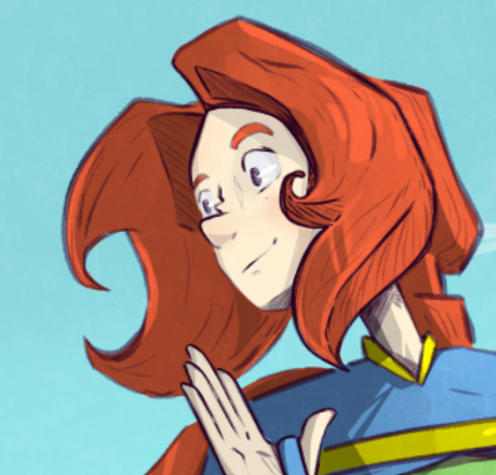

Morriebird's Art
üîç Please Read
- I like to draw:
- buff ladies
- sympathetic monsters
- nature and landscapes
- low fantasy, down-to-earth fantasy, folklore
- weird stuff
-
I will not draw:
- Depictions of real persons.
- White supremacy bullshit, e.g., categorically evil races or "hero cops" (ACAB).
- SWERF bullshit.
- TERF bullshit.
- Sexual imagery of children, including childlike fictional characters.
- Other:
- I'm comfortable drawing explicit adult content, fetishes, and violence. Please contact me via email regarding NSFW art.
- I'm not great at detailed architecture and mechanics but happy to give it a try.
©️ Copyright
- I maintain all rights reserved for all work.
- All commissions are for personal use only unless otherwise arranged for commercial use.
- Altering my work for personal use only is welcomed! For example, adding color to line art.
- Not for NFTs/AI.
- Please credit me as "morriebird" and provide a link to the original piece and/or this website "morriebird.art" when applicable.
Process and Payment
- Prices are negotiable, please ask!
- Paypal only
- I'll share drafts/WIP and will request complete payment before I finish work.
- Commissions are not first come, first serve.
Simple Portrait

- Black and white, digital pencil.
- Simple portraits can include half body with limited motion and detail.
- Starting price: $30
Complex Portrait

- Black and white, digital pencil.
- A complex portrait includes dramatic poses, motion, multiple subjects, detailed backgrounds.
- Starting price: $60
Simple Full-Body

- Black and white, digital pencil.
- Simple full-body includes idle poses, no background
- Starting price: $65